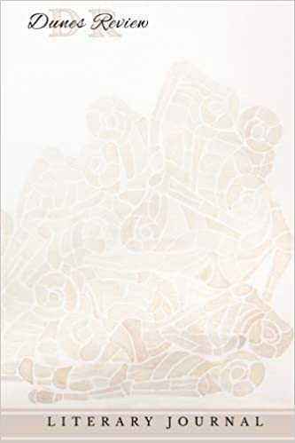
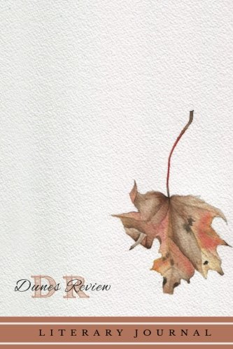
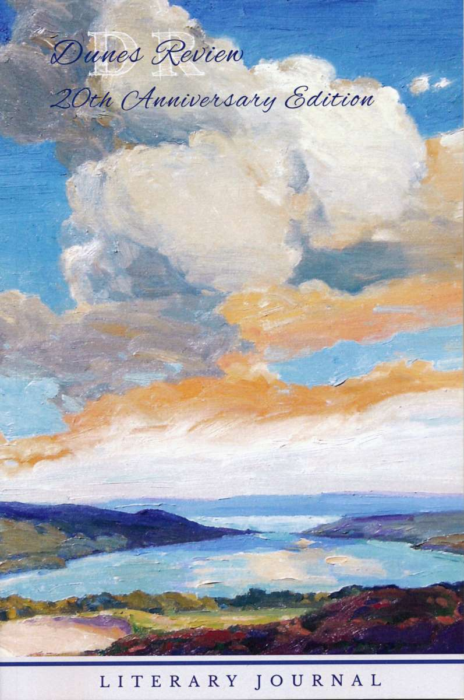

Nicco Pandolfi
Nonfiction
Using the Fruits of the Land
appeared in the Spring 2015 issue of Edible Grande Traverse
Making the Case for Frozen Produce
appeared in the Winter 2015 issue of Edible Grande Traverse
Month of Pantry, Month of Plenty
appeared in the Winter 2016 issue of Edible Grande Traverse
Poetry
A Eulogy for Socrates
appeared in Dunes Review 19.1
Cloud Mantra
appeared in Dunes Review 19.2
Summer, Sung in Winter
appeared in Dunes Review 20.2
Reviews
Love Bomb: Victor Wooten Trio at the Ark
appeared in PULP: Arts Around Ann Arbor
Comprovisation: Julian Lage and Chris Eldridge at the Ark
appeared in PULP: Arts Around Ann Arbor
Circuit Bent Organ Duo at Kerrytown Concert House
appeared in PULP: Arts Around Ann Arbor
‹ Bio
×
Bio
A librarian raised by musicians, Nicco resides in the village of Lake Leelanau with his wife, their cat, and a growing panoply of plants and musical instruments.
After completing undergraduate work in history and environmental studies, he worked for several years in local food production and procurement, grappling with questions of appropriate technology and livable scale.
Seeking new tools and a better understanding of how our shared information infrastructure may both foster and constrain the possibilities for a livable future, he went back to school for a master’s in library and information science.
He currently works as a librarian at Northwestern Michigan College, collaborating with faculty to foster students’ information literacy through research and reflection, and fills his non-work time with music, writing, canoeing, and gardening.